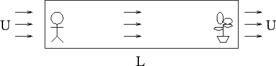

An astronaut stands at the left end of a long hallway of length Land produces carbon dioxide at a steady rate. At the other end of a
hallway, a large houseplant consumes carbon dioxide at the same rate.
Assuming a ``Fourier law'' diffusion mechanism, develop a
one-dimensional mathematical
model for the amount of CO2 as a function of space and time if
there is a ventillation system that
circulates air from left to right at a speed U.

Find a steady state solution.
2.
Consider the same problem as above without the fan but with a
sloping roof in the hallway.
Find a steady state solution.
3.
Consider the same problem, but with a stepped hallway as shown. You
may assume that the hallway makes the step at x=L/2.